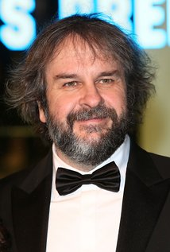

The Lord of the Rings
The Lord of the Rings was a book written by J.R.R. Tolkien and was also adapted into a film trilogy by Peter Jackson. This page will cover the difference between the movie and book
Author and Director
-
Name: John Ronald Reuel Tolkien
Born: 3 January 1892
Wikipedia Article -

Name: Peter Robert Jackson
Born: 31 October 1961
Wikipedia Article
Book and Film Adaptations
Books and their Film Adaptations never quite turn out the same with good Reason. For one are the time constraints of a movie, its just physicially impossible to put everything that is the book and write it into the movie. A movie must balance this all while making sure that the plot and pacing of the movie doesn't drag and leave a boring movie to watch. Saying so this site is not to be critical about the difference but just to note the difference for audience members to know. I'll leave you with a quote also from one of the actors on the matter below.
"Lord of the Rings is perhaps the most faithful screenplay ever adapted from a long novel. This is not just because our writing quartet is devoted to the original and would share other fans' resentment if it were"mistreated". Tolkien has an advantage over Dickens, Tolstoy and other epic writers. His story lines have a clear sweep and are less concerned with the byways and subplots which characterise 19th century novels. Consequently the major milestones of the Fellowship's journey are intact. Inevitably, even in a three-film version, there will be some omissions of characters and elisions of events but as the story unfolds onscreen and as the landscapes are seen for the first time, little will be missed." -Ian McKellen